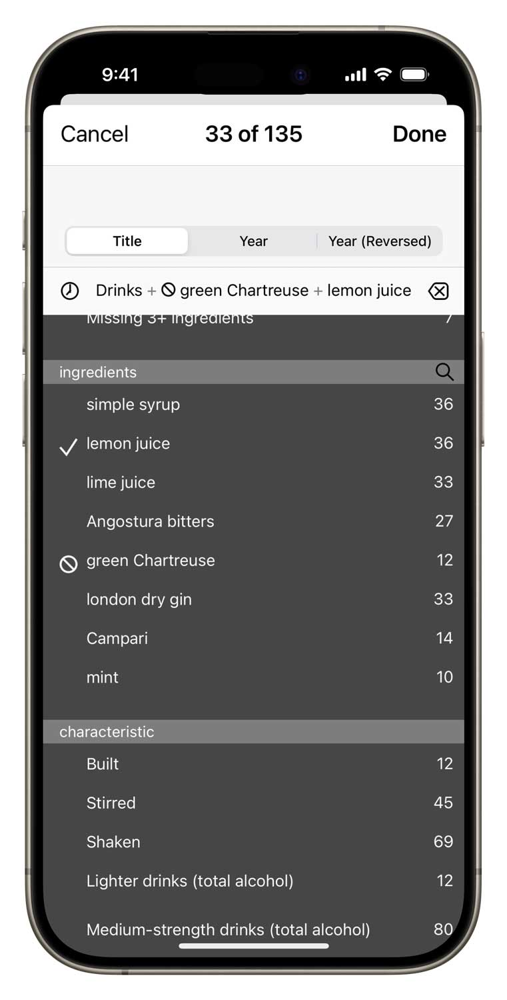
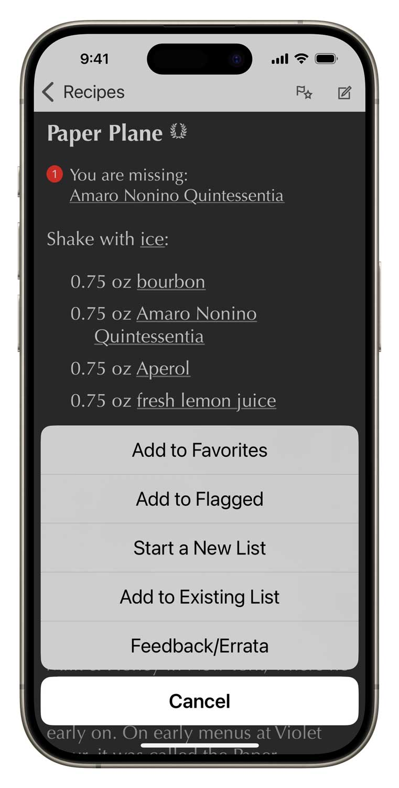

Modern Classics is the first independent, critical assessment of the original drinks of these recent decades. The drinks herein are researched, compiled, and updated by New York Times drinks writer, journalist and author Robert Simonson. This brutally honest collection identifies, justifies and presents the authoritative, verified and properly attributed.
★★★★★ by Chickpea87, May 5, 2020
This is exactly what I’ve been looking for!
Googling for a recipe is a lost cause—too much recipe clutter, too many poor quality recipes out there—and that’s when I loosely know what I want to make. With Modern Classics I love that I can easily search for my cocktail craving, scroll through what I can make (based on what I’ve got in), and/or easily see what I need to quickly pop to the store for, if I’m an ingredient or two short.
The best of the best
Modern Classics organizes and presents over 120 meticulously researched recipes in four categories: the modern classics, the objectively popular drinks that might yet achieve that status, certain drinks identified as critical favorites worthy of more attention, plus a collection of foundational recipes from the 1970s, 1980s and 1990s that helped set the stage for today’s cocktail renaissance.
Modern Classics
Barrel-aged Negroni - Jeffrey Morgenthaler, Clyde Common, Portland, OR, 2009
Benton’s Old Fashioned - Don Lee, PDT, New York City, 2007
Black Manhattan - Todd Smith, Cortez, San Francisco, 2005
Bramble - Dick Bradsell, Fred’s Club, London, UK, 1991/2
Breakfast Martini - Salvatore Calabrese, Library Bar, Lanesborough Hotel, London, 1996
Chartreuse Swizzle - Marcovaldo Dionysos, San Francisco, 2002
Cosmopolitan - Toby Cecchini, Odeon, New York City, 1988
Earl Grey MarTEAni - Audrey Saunders, Bemelmans Bar, New York City, 2003/4
Gin Basil Smash - Joerg Meyer, Le Lion, Hamburg, Germany, 2008
Gin Gin Mule - Audrey Saunders, Beacon, New York City, USA, 2000
Gold Rush - T. J. Siegel, Milk and Honey, New York City, USA, 2001
Gunshop Fizz - Kirk Estopinal and Maksym Pazuniak, Cure, New Orleans, 2009
Jasmine - Paul Harrington, Townhouse, Emeryville, California, 1990
Little Italy - Audrey Saunders, Pegu Club, New York, 2005
Naked and Famous - Joaquín Simó, Death & Co., New York City, 2011
Oaxaca Old Fashioned - Phil Ward, Death & Co, New York City, 2007
Old Cuban - Audrey Saunders, Beacon/Tonic, New York City, 2001
Paper Plane - Sam Ross, The Violet Hour, Chicago, 2007
Penicillin - Sam Ross, Milk & Honey, New York City, 2005
Porn Star Martini - Douglas Ankrah, Townhouse, London, 2001
Red Hook - Vincenzo Errico, Milk & Honey, New York City, USA 2003
Seelbach Cocktail - Adam Seger, The Seelbach Hotel, Louisville, 1996
Siesta - Katie Stipe, Flatiron Lounge, New York City, 2006
Tommy’s Margarita - Julio Bermejo, Tommy’s Mexican Restaurant, San Francisco, early 1990s
Trident - Robert Hess, Seattle, Washington, USA, 2002
Trinidad Sour - Giuseppe Gonzalez, Clover Club, Brooklyn, NY, 2008
Vodka Espresso - Dick Bradsell, Soho Brasserie, London, 1980s
White Negroni - Wayne Collins, Bordeaux, France, 2001
Minor Classics
American Trilogy - Richard Boccato and Michael McIlroy, Milk & Honey, New York, 2006
Ancient Mariner - Jeff Berry, Los Angeles, 1994
The Art Of Choke - Kyle Davidson, The Violet Hour, Chicago, 2008
Barbacoa - Julian Cox, Rivera, Los Angeles, 2009
Basil Gimlet - Greg Lindgren, Rye, San Francisco, 2006
Beuser and Angus Special - Gonçalo de Sousa Monteiro, Victoria Bar, Berlin, 2007
Bitter Giuseppe - Stephen Cole, The Violet Hour, Chicago, 2007
Blackbird - Joaquin Simo, Death & Co, New York, 2008
Bourbon Renewal - Jeffrey Morgenthaler, Eugene, Oregon, 2001
Brancolada - Jeremy Oertel, Donna, Brooklyn, New York, 2012
Bywater - Chris Hannah, French 75 Bar, New Orleans, 2008
Carondelet - Maks Pazuniak, Maison Premiere, New York Ciy, 2011
Carroll Gardens - Joaquin Simo, Death & Co, New York, 2008
CIA - Tonia Guffey, Flatiron Lounge, New York, 2011
Conference - Brian Miller, Death & Co., New York, 2007
Corpse Reviver Number Blue - Jacob Briars, Cocktail World Cup, Queenstown, New Zealand, 2007
Darkside - Adam Bernbach, Bar Pilar, Washington, D.C., 2008
Death Flip - Chris Hysted, Black Pearl, Melbourne, Australia, 2010
Division Bell - Phil Ward, Mayahuel, New York City, 2009
Eastside - George Delgado, Libation, New York, 2004
Eeyore’s Requiem - Toby Maloney, Violet Hour, Chicago, 2010
Elder Fashioned - Phil Ward, Death & Co, New York, 2007
The Ellison - Charles Hardwick, Blue Owl, New York City, 2007
Enzoni - Vincenzo Errico, Match, London, 2000.
Final Ward - Phil Ward, Pegu Club, New York City, 2006
French Pearl - Audrey Saunders, Pegu Club, New York City, 2006
Gin Blossom - Julie Reiner, Clover Club, Brooklyn, NY, 2009
Ginger Rogers - Marcovaldo Dionysos, Absinthe, San Francisco, 1998
Gordon’s Cup - Toby Maloney, Milk & Honey, New York City, 2002
Greenpoint - Michael McIlroy, Milk & Honey, New York City, 2006
Hard Sell - Brad Bolt, Bar DeVille, Chicago, 2009
Hard Start - Damon Boelte, Prime Meats, Brooklyn, New York, 2010
Industry Sour - Ted Kilgore, Taste, St. Louis, 2011
Jamaican Firefly - Audrey Saunders, Beacon, New York City, 2000
Joy Division - Phil Ward, Death & Co., New York, 2008
Juliet & Romeo - Toby Maloney, The Violet Hour, Chicago, 2007
Kentucky Buck - Erick Castro, Bourbon & Branch, 2009
Kingston Negroni - Joaquín Simó, Death & Co., New York, 2009
La Perla - Jacques Bezuidenhaut, Peche/Tres Agaves, San Francisco, 2005
Laphroaig Project - Owen Westman, Bourbon & Branch, San Francisco, 2009.
Left Hand - Sam Ross, Milk & Honey, New York, 2006
Maximillian Affair - Misty Kalkofen, Green Street, Boston, 2008
Medicina Latina - Marcos Tello, The Varnish, Los Angeles, 2009
Moon Cocktail - Thomas Waugh, Death & Co., New York City, 2008
Nuclear Daiquiri - Gregor de Gruyther, LAB, London, 2005
Paddington - David Slape, PDT, New York City, 2008
Piña Verde - Erick Castro, Polite Provisions, San Diego 2012
Ranglum - Gonçalo de Sousa Monteiro, Victoria Bar, Berlin, 2006
Revolver - Jon Santer, Bruno’s, San Francisco, 2004
Right Hand - Michael McIlroy, Milk & Honey, New York, 2007-8
Rome with a View - Michael McIlroy, Milk & Honey, New York, 2008
Russian Spring Punch - Dick Bradsell, London, 1980s.
Silver Lining - Joseph Schwartz, Milk & Honey, 2001
Single Village Fix - Thad Vogler, Beretta, San Francisco, 2008
The Slope - Julie Reiner, Clover Club, Brooklyn, 2009
St. Germain Cocktail - anonymous corporate creation, 2007
Staggerac - Don Lee, PDT, New York City, 2007.
Tantris Sidecar - Audrey Saunders, Beacon, New York City, 2000
Tia Mia - Ivy Mix, Lani Kai, New York, 2010
Twinkle - Tony Conigliaro, Party Bar, London, 2000
Weeski - David Wondrich, Brooklyn, NY, 2004
Whiskey Apple Highball - Shady Pines Saloon, Sydney, Australia, 2010
Wibble - Dick Bradsell, The Player, London, 1999
Wildest Redhead - Meaghan Dorman, Lantern’s Keep, New York City, 2011
Winchester - Brian Miller, Elettaria, New York City, 2009
Critic Picks
The Criterium - St. John Frizell, Fort Defiance, Brooklyn, NY, 2012
Duke of Suffolk - Giuseppe Gonzalez, Suffolk Arms, New York City, 2016
Fernando - Dushan Zaric and Jason Kosmas, Employees Only, New York City, 2007
Kill-Devil - Erin Williams, Pegu Club, New York City, 2008
La Guepe Verte - Toby Cecchini, Candelaria, Paris, France, 2011
Mr. Brown - Franky Marshall, Clover Club, Brooklyn, NY, 2011
Remember the Alimony - Dan Greenbaum, The Beagle, New York City, 2012
Salt and Ash - Maks Pazuniak, The Counting Room, Brooklyn, NY, 2010
Sawyer - Don Lee, Momofuku Ssam Bar, New York, 2010
Seven-Spice Sour - Don Lee, Ma Peche, New York City, 2009
Star and Garter - Jessica Gonzalez, Elephant Bar, NoMad Hotel, New York City, 2012
Early Foundations
Añejo Highball - Dale DeGroff, The Rainbow Room, New York City, 1997-1999
Cable Car - Tony Abou-Ganim, Starlight Room, San Francisco, 1996
Combustible Edison - “The Millionaire”, Combustible Edison, 1994.
The Debonair - Gary Regan, 1993.
Drink Without A Name - Paul Harrington, The Townhouse, Emeryville, CA, 1990
The Fitzgerald - Dale DeGroff, The Rainbow Room, New York City, 1994-1996
Flying Kangaroo - Charles Schumann, Schumann’s American Bar, Munich, 1979
Juniperotivo - Jerri Banks, Fressen, New York City, 1999
Lemon Drop - anonymous, Henry Africa’s, San Franciscso, 1970s
Perfect Pear - Marcovaldo Dionysos, Sauce Box, Portland, OR, 1995
Ritz Cocktail - Dale DeGroff, Aurora, New York City, 1985-1986
Swimming Pool - Charles Schumann, Schumann’s American Bar, Munich, Germany, 1979
Treacle - Dick Bradsell, 1990s
Whiskey Smash - Dale DeGroff, The Rainbow Room, New York City, 1998-1999
Easy-to-use power
Search by name or ingredient just like in your address book. Surf through recipes and ingredients by tapping hyperlinks.
More surgical questions are just a few taps away: filter all the recipes by any combination of ingredients and keywords.
Ingredient aware
Our drink recipe apps have the smartest ingredient system. Simply check off what you have and the app will tell you which drinks you can make, including legit substitions.
★★★★★ by Raygan, May 10, 2017
As with all apps from this developer this is a polished app with many useful and thoughtful features, like a sync service for your inventory and detailed info about ingredients and substitutions. This app in particular suits my tastes well, as most of the drinks were new to me, and all were fun, modern, and tasty. Introduced me to my new favorite cocktail, the Revolver. Highly recommended.
Simple tools of great utility
Flag recipes you want to try, populate your favorites list, create a new list for planning the drinks for your next party. Add your own notes to any recipe.
Part of a talented family
Modern Classics inter-operates with its seven sibling recipes apps that you can add at any time.

Set up your free sync account and all these apps can share your ingredient inventory, lists and journal notes. In the same manner, you can have Total Tiki on both your iPhone and iPad, and they’ll stay in sync. You can even access your sync data with a web browser.